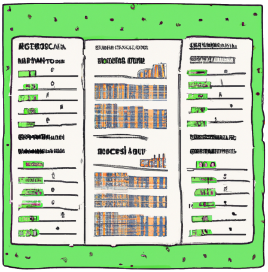

A view is a virtual table defined by a SQL query. When you create a view, you query it in the same way you query a table. When a user queries the view, the query results contain data only from the tables and fields specified in the query that defines the view.
https://cloud.google.com/bigquery/docs/views-intro
You create a view to make data more accessible: shorter name, shorter query length, customized number and names of columns etc.
A view is similar to a table function but does not take any parameters. A view is also attached to a specific dataset.
CREATE VIEW example_dataset.orders_2022 AS
( SELECT *
FROM bigquery-public-data.thelook_ecommerce.orders
WHERE FORMAT_DATE('%Y', created_at) = '2022'
);
SELECT *
FROM example_dataset.orders_2022
ORDER BY created_at
LIMIT 10;
A view can be deleted from the UI or using DROP VIEW statement.
bigquery-public-data.thelook_ecommerce.events
Create a view that shows only the events that are generated by a user.
SELECT COUNT(*) AS event_count
FROM example_dataset.user_events_view
WHERE user_id IS NOT NULL;
| event_count |
|---|
| 1301394 |
SELECT COUNT(*) AS event_count
FROM example_dataset.user_events_view
WHERE user_id IS NULL;
| event_count |
|---|
| 0 |
CREATE OR REPLACE VIEW example_dataset.user_events_view AS
( SELECT *
FROM bigquery-public-data.thelook_ecommerce.events
WHERE user_id IS NOT NULL
);